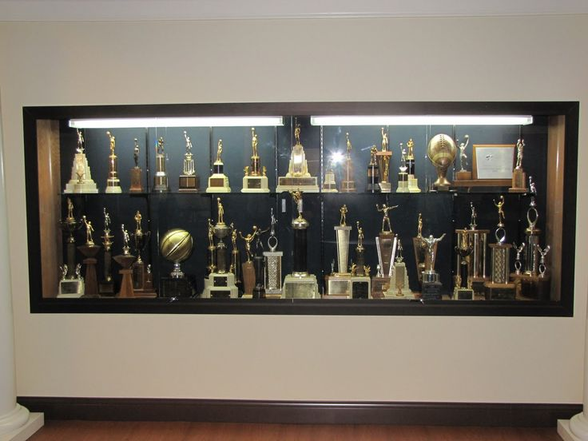
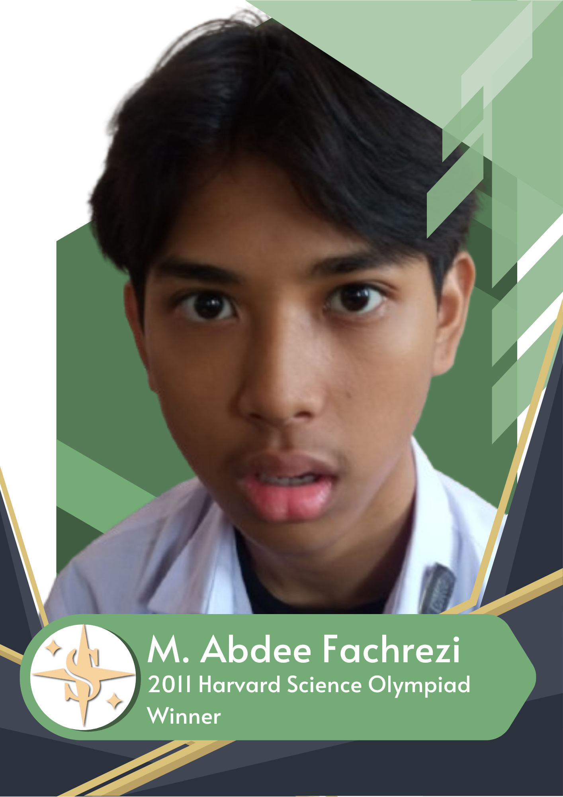
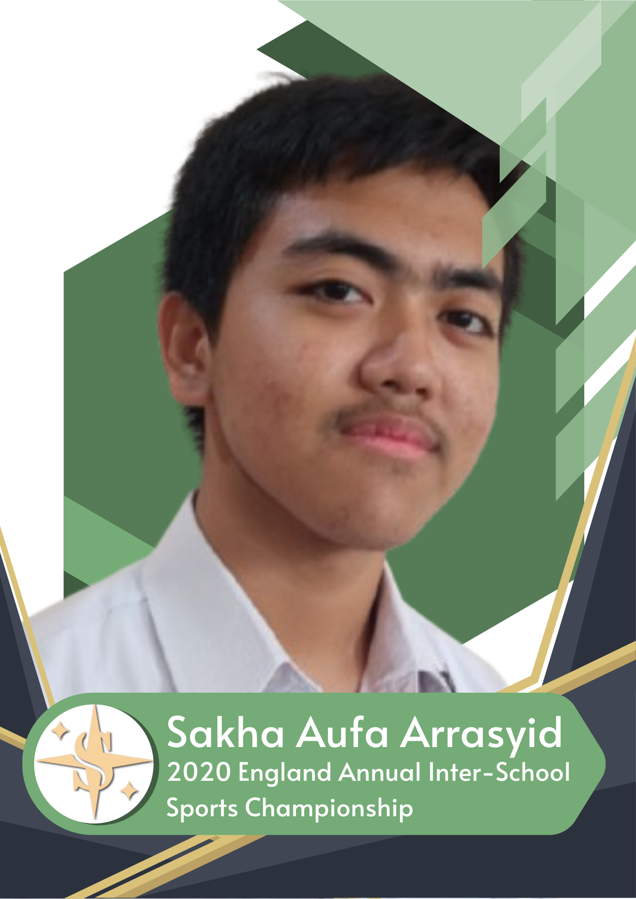

Achievements and Awards

Learn more about our achievements and awards.
Academic Achievements
Satya International School has a strong track record of academic excellence, with our students consistently achieving high grades and awards in various subjects.

- Top 10% in National Exams: Our students have consistently ranked in the top 10% in national exams, demonstrating their academic excellence.
- International Olympiad Winners: Our students have won numerous awards in international Olympiads, showcasing their skills and knowledge in various subjects.
- Science Fair Winners: Our students have won several awards in science fairs, demonstrating their creativity and innovation in science and technology.
- Top University Acceptances: Our students consistently gain acceptance into top universities around the world, highlighting their academic prowess and preparedness for higher education.
Co-Curricular Achievements
Satya International School also excels in co-curricular activities, with our students achieving success in various sports, arts, and cultural events.

- Champions in Inter-School Sports: Our students have won several championships in inter-school sports competitions, demonstrating their teamwork and sportsmanship.
- Winners in Art and Music Competitions: Our students have won numerous awards in art and music competitions, showcasing their creativity and talent.
- Cultural Event Winners: Our students have won several awards in cultural events, demonstrating their knowledge and appreciation of different cultures.
- Debate Champions: Our students have excelled in national and international debate tournaments, showcasing their critical thinking and public speaking skills.
- Entrepeneurship Awards: Our student-led startup projects have received numerous accolades in entrepreneurship contests.